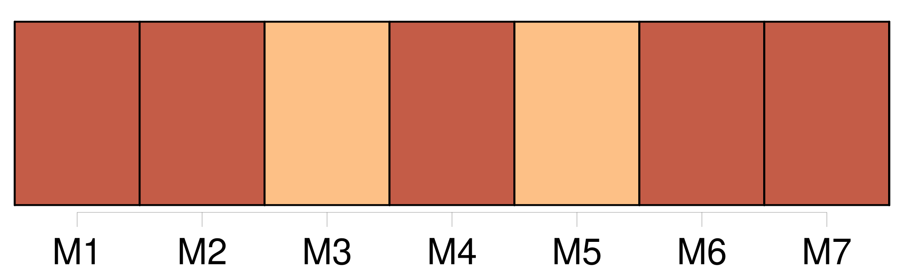
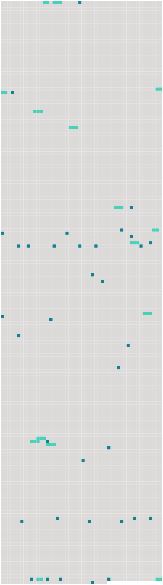

Longueur nb maillons : 49 mentions |
  |
Je m'y laisserais aller, si je ne me sauvais vite vers [mon Anna] , [mon petit trésor] , et si je ne [lui] faisais appeler : « Papa » et m'embrasser un millier de fois. [68 phrases] Mme Seton avait décidé d'emmener [sa fille aînée Anna-Maria] , [qui] avait alors huit ans. [10 phrases]
» [13 phrases] Je vous écris donc ; mais quand je vous aurai appris que mon cher William va mieux de jour en jour, et que [ma petite Anna] se porte bien et moi aussi, je crois que je n'aurai plus rien de bien intéressant à vous conter. [34 phrases] « [Pauvre petite Anna] , comme [elle] tremblait pendant tout ce temps -là!! [14 phrases] Je suis revenue ensuite vers mon pauvre William ; lui et [Anna] avaient grand besoin de quelques paroles d'encouragement. [Petite chérie] !!
[elle] ne fut pas longue à trouver un bout de corde qui avait lié une de nos caisses, et [elle] s'est mise à sauter ; le froid nous faisait grelotter sur ce pavé de briques, dans cette grande chambre aux murailles nues. [2 phrases] Maintenant, William et [Anna] dorment étendus sur des matelas de bord qu'on a posés sur ce pavé froid. [4 phrases] Comme vous auriez aimé [la petite Anna] , si vous [l'] aviez vue tout à l'heure, pendant [ses] prières, [ses] petits bras enlacés à mon cou ; [elle] répandait des larmes à flots. Je [lui] ai lu, pour [l'] endormir, quelques courtes paroles de confiance et d'abandon à Dieu ; [elle] m'a dit : Maman, si papa allait mourir ici!! [19 phrases] [Anna] et William ont pris un peu de pain trempé dans ce lait ; et moi, tout en marchant de long en large, une croûte de pain avec un peu de vin. [4 phrases] [Anna] se mit à frotter l'une de ses mains, moi l'autre, jusqu'à ce que la chaleur de la fièvre fût survenue. [20 phrases]
Mis [ma petite Anna] en train à [son] travail ; moi -même appliquée à ma chère Écriture sainte, tout contre le lit du pauvre malade, tremblant d'un accès de fièvre. [1 phrases] Il a fait dresser des bancs sur lesquels nous pourrons coucher, [Anna] et moi, et il y a inscrit nos noms : Signor Gugliemo, Signora Elisabetta, Signorina, Anna-Maria. [10 phrases] Écouté lire [Anna] , pendant que je contemplais le soleil couchant, au milieu d'un nuage. [7 phrases] Fait la lecture pour lui — Écouté [Anna] — Rangé, mis tout en ordre ; notre Luigi nous a apporté un élégant bouquet de jasmins, de géraniums et d'œillets. [17 phrases] Au coucher du soleil, une demi-heure de calme ; [Anna] et moi avons chanté les hymnes de l'Avent, à mi-voix. [44 phrases] « La nuit dernière, j'ai été obligée de me mettre au lit à dix heures, pour me réchauffer dans les bras de [la petite Anna] [1 phrases] Restée au lit, avec [ma petite Anna] , à [lui] expliquer le Te Deum jusqu'à neuf heures. [1 phrases] Il a lu, à la demande de [la petite Anna] , le dernier chapitre de l'Apocalypse ; mais l'accent de cette voix!! [2 phrases] William, avec une couverture sur ses épaules, se traîne vers le feu de notre vieux serviteur ; [Anna] saute à la corde, et Mme Élisabeth fait cinq ou six fois de suite le tour de la chambre, en sautant sur un pied. [9 phrases] — [Anna] dit : « Encore que nous ayons si froid, et que nous soyons dans une prison, comme nous sommes heureux, en comparaison d'eux!! [40 phrases] [Anna] est souffrante. [4 phrases] Jour d'anxiété passé entre [Anna] et son père. [Elle] a été très souffrante pendant quelques heures. Quand [elle] s'est trouvée un peu mieux, nous nous sommes mises à genoux toutes les deux. [1 phrases] puisse [sa] chère âme répandre longtemps de ces larmes précieuses comme [elle] en répandait tout à l'heure. [44 phrases] [Anna] est [un trésor] [Elle] lisait hier dans [son] Évangile que Jean-Baptiste avait été mis en prison. Oui, papa, disait [-elle] , Hérode le mit en prison, mais Hérodiade le délivra — non, [ma chérie] , Hérodiade demanda qu'on le fît mourir. [1 phrases] — [Enfant] selon mon cœur!! |
 |
La ressource peut être téléchargée sur la page Ortolang
Si vous avez des questions ou vous voyez des erreurs, merci d'envoyer un mail à silvia.federzoni89@gmail.com
Site développé par S. Federzoni (contact)